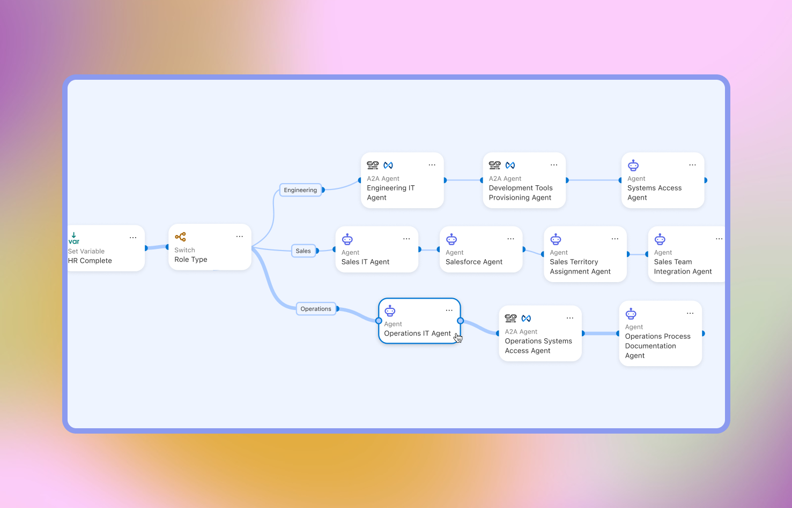
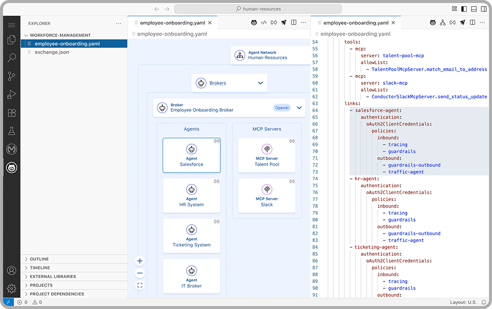
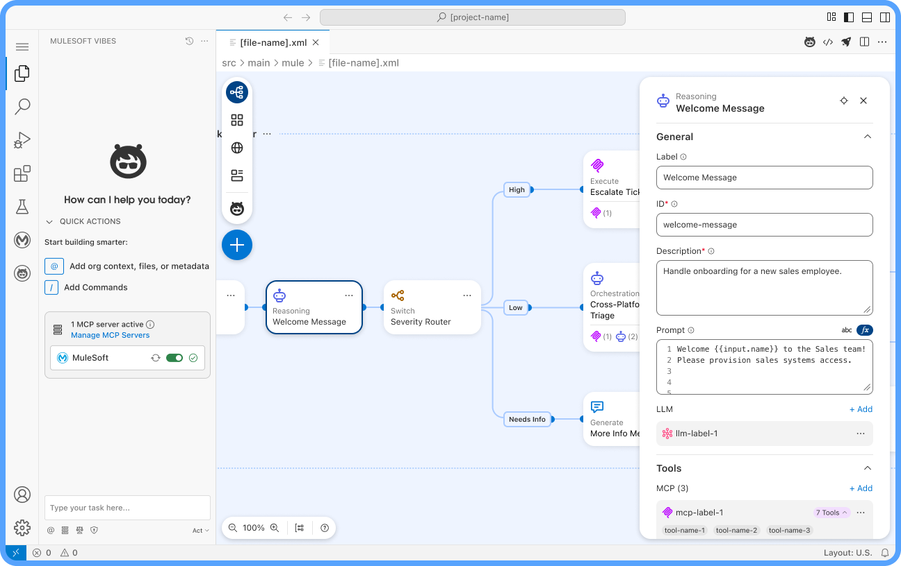
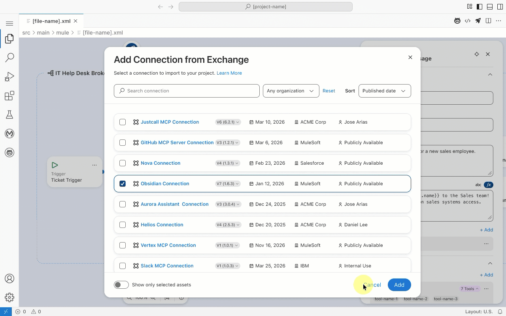
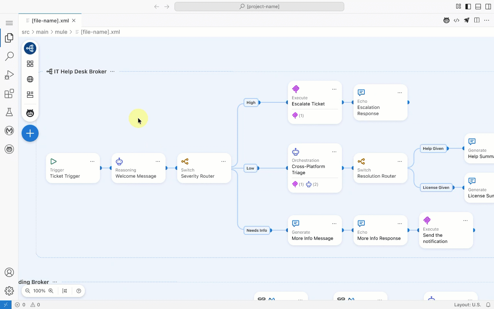
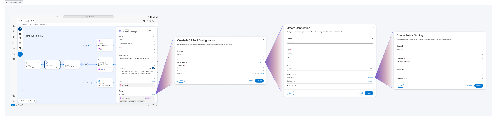

Agent Network
A specialized IDE experience within Anypoint Code Builder that enables developers to visually architect, govern, and deploy complex multi-agent networks using a canvas-based, deterministic orchestration engine.
01 Project Brief
Goal
- AI & Integration Developers: Technical users responsible for building, testing, and deploying semi-autonomous agent networks (Agent Fabric) within an enterprise ecosystem.
- AI Agents (Claude/Cursor): Functioning as primary contributors that require strict logic and rule-based guardrails to generate high-quality UI.
- Future Contributors: Developers who need a scalable, tokenized framework that adapts to new components automatically.
Users
- AI & Integration Developers: Technical users responsible for building, testing, and deploying semi-autonomous agent networks (Agent Fabric) within an enterprise ecosystem.
- System Architects: Personas focused on the high-level orchestration, discovery, and governance of reusable agentic assets and MCP (Model Context Protocol) tools.
- FAI Agents (The "Vibes" User) The IDE itself acts as a user, utilizing natural language instructions to translate legacy V1 YAML into V2 Agent Script-based graphs.
Team
- UX Team: 2 lead designers including me 😎;
- Engineering Team: 30 engineers;
- Product Management Team: 3 product managers;
- Technical Writing Team: 2 technical writers;
Skills
- User Research
- User Experience Design
- DSL & Dialect Design
- Experience Infrastructure

Before
A read-only YAML broker that provided a static view of simple "agent loops." Developers were forced to jump between text files and a non-interactive diagram, with no ability to edit logic directly on the canvas.

After
A fully configurable, bidirectional orchestration engine. Every node and edge on the canvas is interactive; changes made visually are programmatically written to the underlying Agent Script in real-time, enabling true "design-as-code."
02 UX Approach

1. Research & Systems Deep-Dive
- Technical Audit: Deep-dived into the YAML dialect and the AgentScript schema to understand the "source of truth."
- Co-Creation Sessions: Partnered with Solution Engineers to identify real-world bottlenecks in multi-agent enterprise deployments.
- Pattern Analysis: Analyzed exchange.json and dependency patterns to define how AI assets should be discovered and reused.
2. Defining the Logic Model (The Knowledge Map)
- Mapping Intent: Translated developer goals into a graph-based taxonomy (Nodes, Edges, and Hand-offs).
- Structural Definition: Defined the "Registry vs. Context" model to separate reusable assets from environment-specific asset & configurations.
- Orchestration Logic: Created a behavioral map that enforces "Guided Determinism" — ensuring the canvas logic matches the state-machine execution of the engine.
3. Iteration & Delivery
- Bidirectional Prototyping: Developed a two-way sync between the visual canvas and the AgentScript code, ensuring zero "logic drift."
- Clear Information Architecture: Designed a clear information architecture for the end to end user experience, keep the user guided and focused on the task at hand: building the broker graph, registering an asset, create a connection, setting up policy-binding or configuring a tool.
- Final Spec: Delivered a high-fidelity IDE experience ready for GA launch, featuring a fully configurable graph canvas,component palette and property panels.
03 Highlights
The Unified Canvas-to-Code Sync
The Problem: Developers struggled to maintain a mental map of fragmented multi-file projects (AgentNetwork YAML for registry, Agent Script for logic, and Exchange.json for dependency management).
The Solution: I designed a bidirectional synchronization mechanism where visual configurations—such as MCP tool bindings or policy attachments—automatically generate the corresponding imports and logic across the underlying file system in real-time.

Multi-Graph Unified View
The Problem: In complex enterprise scenarios, brokers and their execution logic are scattered across separate files. Developers were forced to "mentally compile" how these independent agent graphs(brokers) interacted, leading to high cognitive load and configuration errors.
The Solution: I designed a unified workspace that surfaces the entire multi-agent network in a single view. Users can navigate the high-level network topology and dive into the specific logic of individual agent graphs without losing context, turning fragmented files into a cohesive, observable system.

Adaptive Property Panels
The Problem: Diverse node types (Brokers, LLMs, Connections, and Policies) require vastly different configuration schemas, creating high cognitive load and UI clutter.
The Solution: I designed a dynamic properties architecture where configuration schemas adapt based on the selected node type. This "just-in-time" interface ensures that complex parameters are only surfaced when contextually relevant, reducing visual noise.

04 Closing Notes
Takeaways
The Power of Abstraction: Success in agentic design isn't about showing the code; it’s about creating the right visual abstractions (Nodes/Edges) that accurately represent the underlying state machine without overwhelming the developer.
Guided Determinism is a Requirement: For enterprise AI to be trusted, the UI must enforce predictability. Mandatory triggers and validated schemas aren't "limitations"—they are the features that make the system production-ready.
The IDE as a Living Bridge: By designing for bidirectional synchronization, I learned that the interface must act as a real-time translator between a developer's intent and the rigid requirements of an AI dialect.